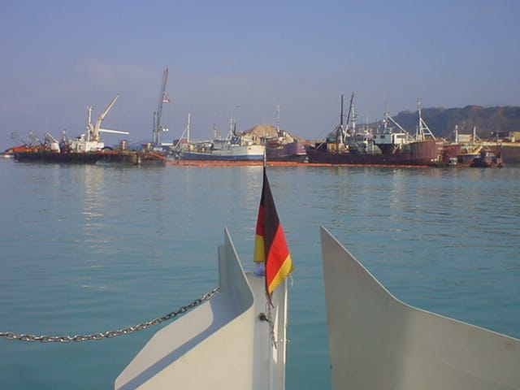
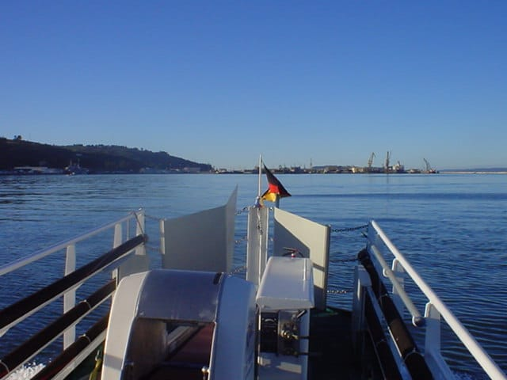
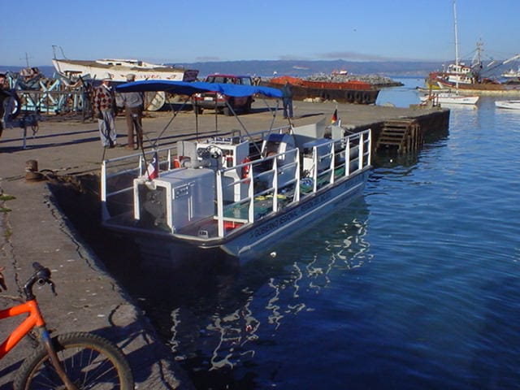
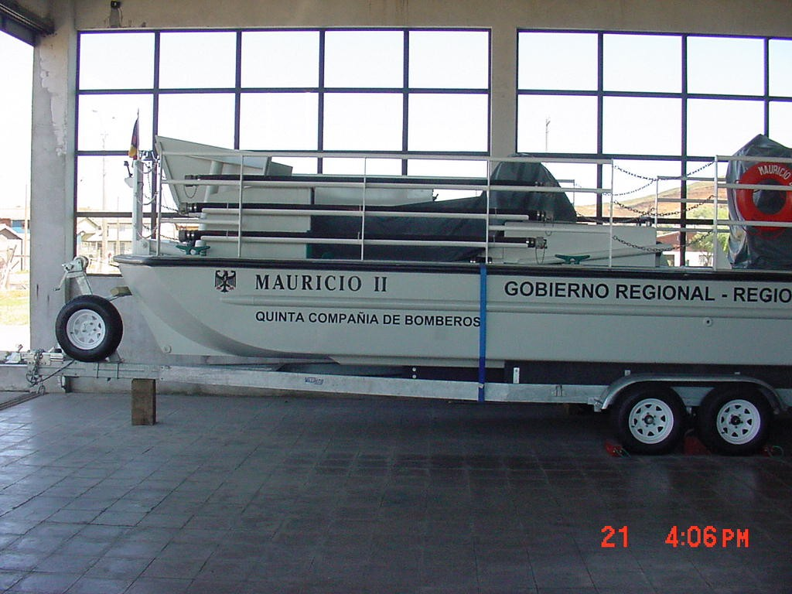

Rescate medioambiental
Embarcación de descontaminación de aguas Harbor 28, construida por los astilleros Marco de Iquique y entregada a la Quinta por el Gobierno Regional del Biobío.
Ya no forma parte de las unidades en servicio de la Quinta.
- Marca
- Astilleros Marco
- Modelo
- Harbor 28
- Año
- 2001
«Mauricio II»




Características de la unidad
- Unidad de rescate medioambiental, única en Sudamérica para la limpieza de recursos hídricos costeros.
- Prestaba servicio a empresas pesqueras e industrias pesadas ante derrames de combustible y en la limpieza regular de sitios costeros.
Otras unidades históricas
«El Guayo» S-150Unidad Renault Camiva S-150, conocida en la Quinta como «El Guayo».
S-150Unidad Renault Camiva S-150, conocida en la Quinta como «El Guayo». BX-5Incendio y rescateUnidad mixta de incendio y rescate Iveco Magirus HLF 30/25 4×4, adquirida en 2012, con gran capacidad de prestaciones y de almacenamiento de equipos.
BX-5Incendio y rescateUnidad mixta de incendio y rescate Iveco Magirus HLF 30/25 4×4, adquirida en 2012, con gran capacidad de prestaciones y de almacenamiento de equipos.
S-150Unidad Renault Camiva S-150, conocida en la Quinta como «El Guayo».- Marca
- Renault Camiva
- Modelo
- S-150
- Año
- 1999
BX-5Incendio y rescateUnidad mixta de incendio y rescate Iveco Magirus HLF 30/25 4×4, adquirida en 2012, con gran capacidad de prestaciones y de almacenamiento de equipos.- Marca
- Iveco Magirus
- Modelo
- FF150E30W
- Año
- 2012
- Tracción
- 4×4